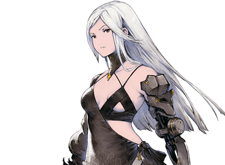
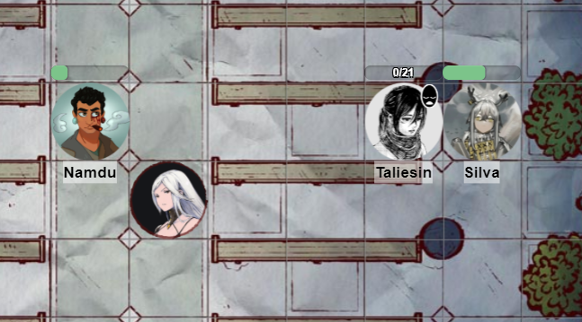
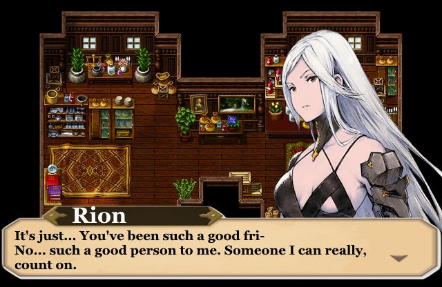

This guide will teach you how to unlock all romance scenes with Rion.
Rion is an NPC the party meets within their first days of the village. She starts out as a bit of brute and rough character but after completing some main quests, she starts to open up.
To assure the best chances of romancing Rion, the correct party member should be selected. Remember you can change the party leader at any time, and this is considered the main patricpant when dialogue occurs. Let's go over each party member's chance.
Firstly, Silva is not a good choice for any romance. Due to her main objective with Schulen, attempting to romance any NPC has been reported to cause major bugs.
Trenil, altough seeming to gain affection with Rion easier, is also not the best choice, due to his devout following of The Goddess, Trenil will only be able to progress Rion's romance if The Goddess tells him to. This is possible, however only in ACT-2. This means you will be missing out on all ACT-1 romance scenes with Rion, of which there are 2 currently known, and a suspected 2 undiscovered ones.
Lastly, this leaves us with two mostly equal choices. Namdu or Taliesin. Though Namdu has no bonus with Rion, it seems he has the most "clean slate" and does not require any internal quests prior. thus, all Rion Romance scenes can be seen with him, he is a decent choice for this guide, at least until you meet a certain...other NPC. Taliesin on the other hand might require completing some internal quests (these are quests that revolve around a party member being mentally well.) but otherwise is a completely equal choice to Namdu.
Before this point, Rion either isn't much for conversation or has no known interest romance, so proceed the game as normal until Gale has gone missing. If you have picked Namdu for this guide DO NOT MEET NADIA the day prior. It's ok if you have already met her in the playthrough, but do not have Namdu meet her the day before Gale goes missing, this will result in a messy scene that causes a debuff to both Nadia and Rion's affection for the day. You will ahve to forgo Nadia as a guest party member for the quest if you want Namdu to romance Rion. Taliesin must complete the "Finding my Name" quest, where she tells the party of her real name prior to Gale going missing, but otherwise there are no other conditions to be met.
Complete "Finding Gale" as normal, besides these following actions.
If Nadia is in your party, side with Rion during their squabble. You can also deny Nadia to come along, but this will make the fight harder, you only lose 2 affection with Rion for this choice and it's not enough to influnce any scenes.
Next, be sure that you talk to Rion as much as possible on the journey, keep talking to her and choose the most affectionate choices until when you try to talk again you get the prompt "She has nothing left to say."

During the fight, under no circumstance should you let Rion even go down in combat. Of course, if she dies her romance can no longer be complete. But the first romance scene is integeral to unlocking the other in ACT-1. When the fight finishes, Rion will run to Gale, where they have a heartfelt moment. At first, give them space but then talk to Rion, telling her it's not her fault and that Gale is safe now. She will thank the player and stifle her tears, asking the party member to meet her tommorrow. This unlocks the second and last known romance scene in ACT-1.
When you leave to meet Rion the next day, visit her house. Be sure to only bring the party member you want to romance her with, otherwise the scene will not trigger. In this scene Rion will thank the party member again and lament to them of how good they heave treated her.
After meeting rion, complete ACT-1 as usual, once you enter ACT-2 (Meeting the moon) you can go back to the village prior to the Abandoned Manor Quest. There is one scene that is often missed that increases affection with Rion greatly.
Visit Rion before you decide to investigate the hole again. Do it alone, much like the second scene in ACT-1. Then when presented with dialogue options, make a persuasion check to tell Rion what you saw. This will trigger the next scene.